[TOC]
面向对象程序设计
1. 动态绑定
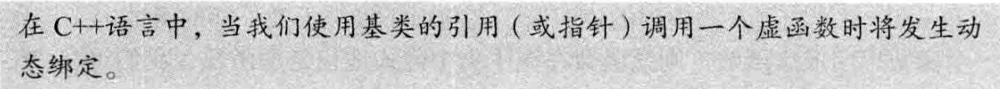
[!NOTE]
[!NOTE]
- 任何构造函数之外的非静态函数都可以是虚函数
- virtual只能出现在类内部的声明语句之前
- 虚函数的派生隐式地也是虚函数
- 如果成员函数没被声明为虚函数，则其解析过程发生在编译时而非运行时
2.派生类中的虚函数
class foo {
virtual void bar() const &;
};
class Foo : public foo {
public:
void bar() const & override;
//使用override关键字显式声明进行了虚函数的覆盖
};
3. 派生类的初始化
[!NOTE]
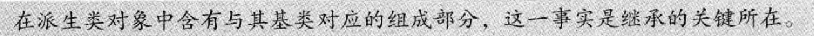
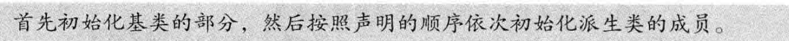
4. 派生类的声明
[!NOTE]
基类必须被定义，该规定还有一层隐含的意思，即一个类不能派生它本身
[!NOTE]
C++11新标准提供了一种防止继承发生的方法：
在类名后跟一个关键字 final
5. 类型转换与继承
[!NOTE]
[!WARNING]
不存在从基类向派生类的隐式类型转换
可以使用dynamic_cast请求一个类型转换，它进行运行时安全检查
Foo F;
foo f;
foo* pf = &f;
Foo* pF = dynamic_cast<Foo*>(pf);
if (pF != nullptr) {
pF->bar();
}
else{//运行时类型检查冲突后返回nullptr
print("pF is nullptr");
}
如上，pf实际上指向一个foo对象，dynamic_cast<Foo*>在运行时检查会拒绝转换，返回一个nullptr，如果pf指向一个Foo对象，那么转换成功。
另一种方法是使用static_cast，static_cast不进行运行时检查来确认pf实际上指向一个Foo类型的对象。如果pf不指向Foo类型的对象，使用static_cast进行向下转换可能会导致未定义行为，例如访问无效的内存。
[!warning]
对象之间的类型转换
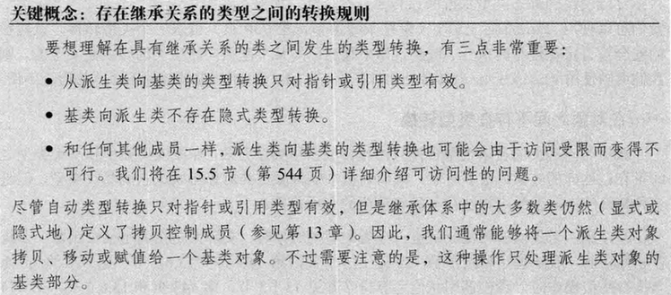
6. 虚函数
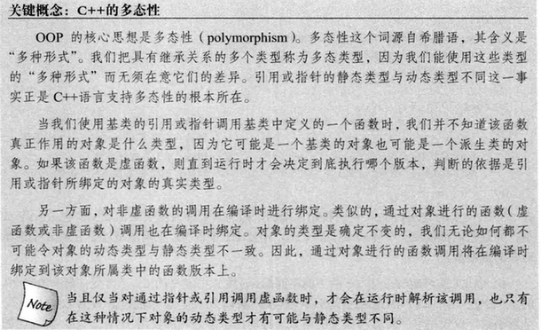
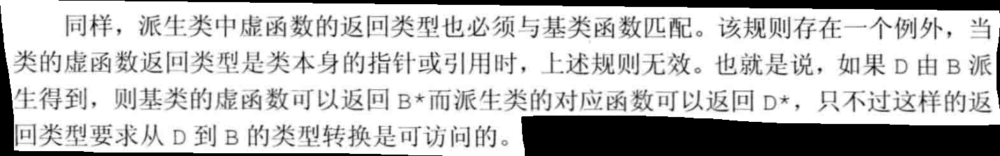
[!NOTE]
可以在函数指定为final，禁止任何尝试覆盖该函数的操作。
class foo {
public:
virtual void func(int) final {}
};
class Foo : public foo {
public:
void func() { print("Foo: func"); } // 参数列表不同，不是覆盖
// void func(int){} 报错
};
默认实参
class foo {
public:
virtual void func(string param="foo") {
print(fmt::format("foo: param:{}", param));
}
};
class Foo : public foo {
public:
virtual void func(string param="Foo") {
print(fmt::format("Foo: param: {}", param));
}
};
void fn() {
foo* pf=new Foo;
pf->func();
}
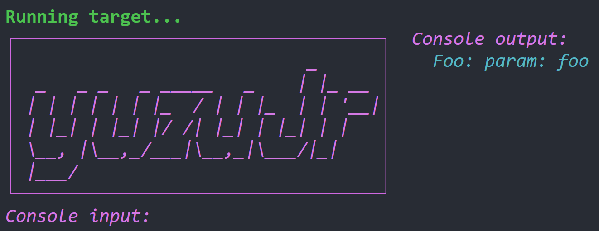
如果某次函数调用使用了默认实参，则该实参值由本次调用的静态类型决定
回避虚函数的机制
[!NOTE]
使用作用域运算符
pf->foo::func();
[!WARNING]
class foo { public: virtual void recurse() { print(fmt::format("foo:recurse")); return; } }; class Foo : public foo { public: // 错误示例：直接调用同名成员会导致无限递归 virtual void recurse() { recurse(); } // 无限递归（错误示例） // 正确示例：显式调用基类版本以避免递归 // virtual void recurse() { foo::recurse(); } // 正确写法 }; void fn() { foo* pf = new Foo; pf->recurse(); }

纯虚函数
virtual return_type func(args..) = 0;
含有纯虚函数的类是抽象基类
不能创建抽象基类的对象
7. 访问控制与继承
[!IMPORTANT]
protected
派生类的成员和友元只能访问派生类对象中的基类部分的受保护成员；对于普通的基类对象中的成员不具有特殊的访问权限。
[!NOTE]
派生类到基类转换的可访问性
友元
class默认私有继承，struct默认公有继承
struct 和 class 唯一的差别就是默认成员访问说明符及默认派生访问说明符；除此之外，再无其他不同之处。
8. 继承中的类作用域
[!NOTE]
可以通过作用域运算符来使用隐藏的成员
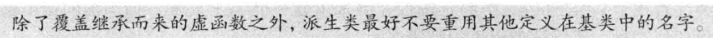
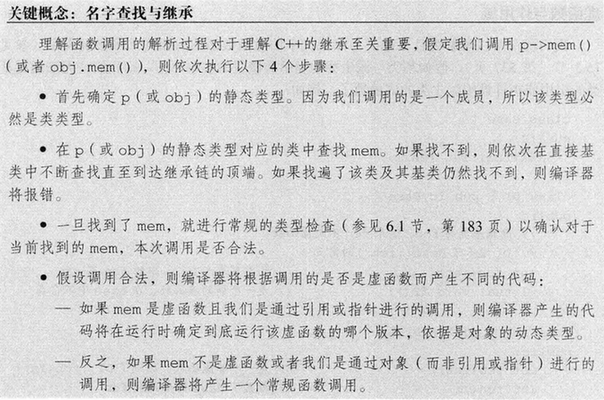
[!important]
名字查找先于类型检查
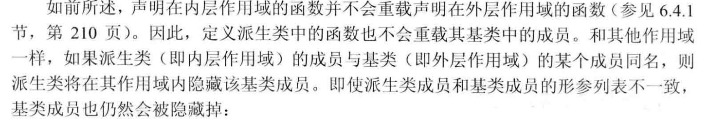
struct Base {
int memfcn();
};
struct Derived : Base {
int memfcn(int); // 隐藏基类的memfcn
};
Derived d;
Base b;
b.memfcn(); // 调用 Base::memfcn
d.memfcn(10); // 调用 Derived::memfcn
d.memfcn(); // 错误：参数列表为空的 memfcn 被隐藏了
d.Base::memfcn(); // 正确：调用 Base::memfcn
[!NOTE]
d.memfcn();编译器首先在Derived中查找名字
memfcn；最先找到memfcn(int),一旦名字找到，编译器就不再继续查找了，参数列表不匹配，编译器报错。[!NOTE]
虚函数形参列表必须相同的原因：
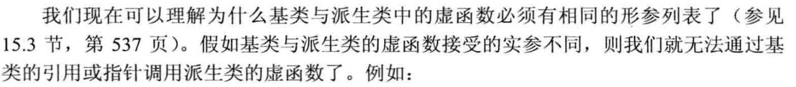
9. 构造函数与拷贝控制
[!WARNING]
基类通常应该定义一个虚析构函数
[!NOTE]
虚析构函数将阻止合成移动操作
[!WARNING]
[!WARNING]
[!NOTE]
继承的构造函数
using Base::Base;
派生类自己的数据成员将被默认初始化。
10. 容器与继承
[!WARNING]
在容器中放置（智能）指针而非对象